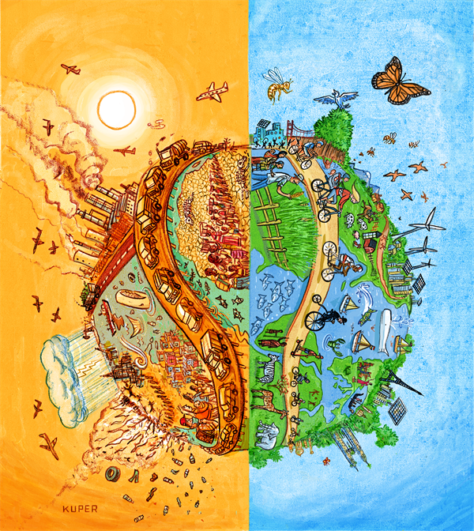

Green Team
CS329E Summer 2021

What is Climate Change?According to Oxford Languages, climate change is defined as "a change in global or regional climate patterns, in particular a change apparent from the mid to late 20th century onwards and attributed largely to the increased levels of atmospheric carbon dioxide produced by the use of fossil fuels." NASA states that the global phenomena known as climate change are due to the burning of fossil fuels which add "heat-trapping gases to Earth's atmosphere." These phenomena include increased temperatures, the rising of sea levels, ice mass loss, changes in the blooming of plant life, and extreme weather events. |
 |
The Green Team is a group of students from the University of Texas at Austin taking CS329E,
Elements of Web Programming.
Our goal is to educate others about climate change and raise awareness about
its causes and effects. A climate crisis is already happening, and the faster we take action the better.
Marc Abdallah is a biomedical engineering major at the University of Texas at Austin.
Tori Garfield is a Geography and Sustainability Studies major at the University of Texas at Austin.